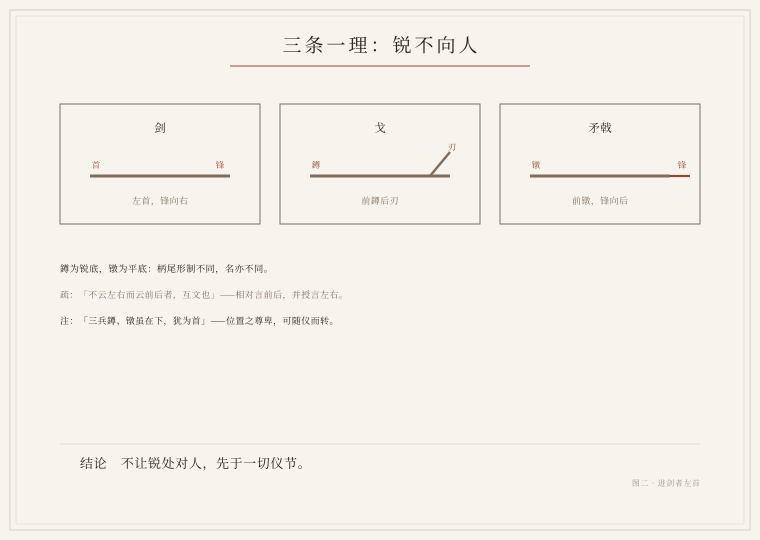

曲礼上 · 一·九十二 · 第 92 课
进剑，剑首向左；进戈，戈锋向后而鐏向前；进矛戟，镦向前。三样兵器，同一原则：锐利之处不向人。
说什么事：进剑者左首；进戈者前其鐏，后其刃；进矛戟者前其镦。
落在哪一层：仪。所避者锋刃。
为何编在此位：上节受弓，此节进兵。弓与兵，同为武具而礼不同。
【经】進劍者左首。進戈者前其鐏，後其刃。進矛戟者前其鐏。
【注】左首，尊也。後刃，敬也。三兵鐏、鏃雖在下，猶為首。銳底曰鐏，取其鐏地，平底曰鏃，取其鏃地。
左首 注「左首，尊也」。剑首（剑柄端）向左，剑锋向右而不向受者。
鐏 《释文》「鐏，在困反」；注「锐底曰鐏，取其鐏地」。戈柄下端锐者曰鐏。
镦 注「平底曰镦，取其镦地」；疏「镦为矛戟柄尾，平底」。矛戟柄尾平者曰镦。
后刃 注「后刃，敬也」。刃向后，不向人。
犹为首 注「三兵鐏、镦虽在下，犹为首」。柄尾虽在末端，进呈时仍以其为前端。
互文 疏「不云左右而云前后者，互文也。若相对则前后也，若并授则左右也」。
进剑，剑首向左；进戈，柄尾的鐏向前、锋刃向后；进矛戟，柄尾的镦向前。
一节三兵，一句话反复：把不伤人的那一端朝向对方。剑以首向左避锋，戈以鐏前刃后避锋，矛戟以镦前避锋。礼在此处只有一个念头——不让锐处对人。
第一层 锐不向人 三条同一理。兵器之礼，先立一个安全的朝向，再谈其他。
第二层 鐏与镦 锐底曰鐏，平底曰镦。同为柄尾，形制不同，名亦不同；礼之细，细到柄尾的形状。
第三层 犹为首 柄尾本在下，进呈时却当它是首。位置之尊卑，可随仪而转。
第四层 互文 疏说不言左右而言前后，是互文：相对授受言前后，并授则言左右。同一礼，视站位而变辞。
与今日何干 递剪刀、递刀、递笔，刃与尖朝己、柄朝人。此节最不需要解释。
| 左 | 右 |
|---|---|
| 进剑左首 | 剑首向左，锋不向人 |
| 进戈前鐏后刃 | 锐底向前，锋刃向后 |
| 进矛戟前镦 | 平底向前 |
| 鐏 | 锐底之柄尾 |
| 镦 | 平底之柄尾 |
| 犹为首 | 柄尾在下，进呈时以为首 |
| 互文 | 相对言前后，并授言左右 |
画三兵横置一案：左为剑，剑首（缠柄一端）向左、剑锋向右；中为戈，柄尾锐端向左、横刃向右后侧；右为矛，平底柄尾向左、矛尖向右。三兵锋刃一律朝右，柄端一律朝左。不画人、不写文字。赭色只在戈的横刃接柄处。
